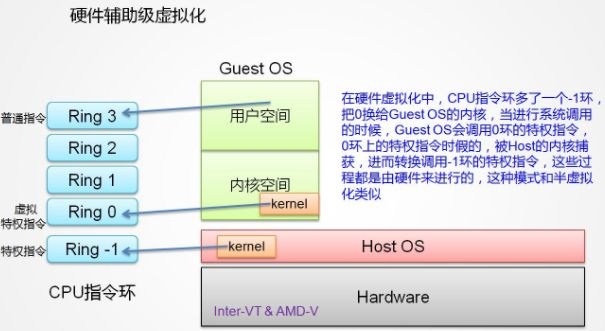

https://github.com/0voice/Introduce_to_virtualization#nav_vt0
名词解释
VMM: 虚拟机监视器
- 在宿主机上表现为一个提供虚拟机CPU, 内存以及一系列硬件虚拟的实体，这个实体在体系中就是一个进程，如qemu-kvm.
- VMM负责管理虚拟机的资源，并拥有所有虚拟机资源的控制权，包括切换虚拟机的CPU上下文等。
Guest: 客户机操作系统/二进制程序。
- 对于VMM，是一堆指令集，只需要知道rip寄存器值就可以加载。
- Guest运行需要虚拟CPU，当Guest代码运行的时候，处于VMX non-root模式，此模式下，该用什么指令还是用什么指令，该用什么寄存器还用什么寄存器，该用cache还是用cache，但是在执行到特殊指令的时候（比如Demo中的out指令），把CPU控制权交给VMM，由VMM来处理特殊指令，完成硬件操作。
CPU运行级别：
- CPU支持ring0~ring3 4个等级，但是Linux只使用了其中的两个ring0,ring3。当CPU寄存器标示了当前CPU处于ring0级别的时候，表示此时CPU正在运行的是内核的代码。而当CPU处于ring3级别的时候，表示此时CPU正在运行的是用户级别的代码。当发生系统调用或者进程切换的时候，CPU会从ring3级别转到ring0级别。ring3级别是不允许执行硬件操作的，所有硬件操作都需要内核提供的系统调用来完成。
VMX：
- 为了从CPU层面支持VT技术，Intel-V 在 ring0~ring3 的基础上， 扩展了传统的x86处理器架构，引入了VMX模式，VMX分为root和non-root。VMM运行在VMX root模式；Guest运行在VMX non-root模式。
CPU虚拟化
基于二进制翻译的全虚拟化

客户操作系统运行在Ring 1, 它在执行特权指令时，会触发异常（CPU的机制，没权限的指令会触发异常），VMM（hypervisor ）会捕获这个异常，在异常里面做翻译，模拟，最后返回到客户操作系统内，客户操作系统认为自己的特权指令工作正常，继续运行。但是这个性能损耗，就非常的大，简单的一条指令，执行完，了事，现在却要通过复杂的异常处理过程。
所谓特权指令是指有特权权限的指令，由于这类指令的权限最大，如果使用不当，将导致整个系统崩溃。比如：清内存、置时钟、分配系统资源、修改虚存的段表和页表，修改用户的访问权限等。
原理：
- 把CPU的所有寄存器都写到一组变量中（CPUFile）（AX = …; BX = …;这样）。然后用一片内存当作模拟CPU的内存（vMem）,然后在用一些数据结构表示IO设备的状态（这里称为vIO），三者的数据结构综合在一起，就是代表一个虚拟化的环境了（这里称之为VM）,之后按顺序读出一条条的指令，根据这个指令的语义，更改VM的数据结构的状态（如果模拟了硬件，还要模拟硬件的行为，比如发现显存被写了一个值，可以在虚拟屏幕上显示一个点等），这样，实施虚拟的那个程序就相当于给被虚拟的程序模拟了一台计算机，这种技术，我称它为“解释型虚拟化技术”。指令是被一条一条解释执行的。

超虚拟化（或者半虚拟化/操作系统辅助虚拟化）
- 半虚拟化的思想就是， 修改操作系统内核，替换掉不能虚拟化的指令， 通过超级调用（hypercall ）直接和底层的虚拟化层hypervisor 来通讯 ，hypervisor 同时也提供了超级调用接口来满足其他关键内核操作，比如内存管理、中断和时间保持。
- 这种做法省去了全虚拟化中的捕获和模拟，大大提高了效率。所以像XEN这种半虚拟化技术，客户机操作系统都是有一个专门的定制内核版本，和x86、mips、arm这些内核版本等价。这样以来，就不会有捕获异常、翻译、模拟的过程了，性能损耗非常低。这就是XEN这种半虚拟化架构的优势。这也是为什么XEN只支持虚拟化Linux，无法虚拟化windows原因，微软不改代码啊。

硬件辅助的虚拟化
- CPU厂商Intel 和 AMD 开始支持虚拟化了。 Intel 引入了 Intel-VT （Virtualization Technology）技术。 这种 CPU，有 VMX root operation 和 VMX non-root operation两种模式，两种模式都支持Ring 0 ~ Ring 3 共 4 个运行级别。这样，VMM 可以运行在 VMX root operation模式下，客户OS运行在VMX non-root operation模式下。
- 两种操作模式可以相互转换。运行在VMX root operation 模式下的VMM通过显示调用 VMLAUNCH 或 VMRESUME 指令切换到 VMX non-root operation 模式，硬件自动加载 Guest OS 的上下文，于是 Guest OS 获得运行，这种转换称为 VM entry。
- Guest OS 运行过程中遇到需要VMM处理的事件，例如外部中断或缺页异常，或者主动调用式，恢复VMM的运行。这种转换称为VM exit. VMX root operation 模式下软件的行为与在没有 VT-x 技术的处理器上的行为基本一致；而VMX non-root operation 模式则有很大不同，最主要的区别是此时运行某些指令或遇到某些事件时，发生 VM exit。
CPU 三种虚拟化机制
不同类型的虚拟化技术是从不同的地方开始引导虚拟机系统的：
- 从模拟的BIOS开始引导，支持MBR,EFI,PXE等启动方式，如QEMU,VMWare
- 从内核开始引导的，虚拟机镜像内不包含内核，如KVM,Xen;
- 从 init 进程开始引导的，虚拟机是一个与主机共享内核的容器，会按照操作系统的引导过程启动各种系统服务，如 LXC、OpenVZ；
- 只运行一个特定的应用程序或服务的，也是基于容器，如 Docker。
/dev/kvm提供的操作包括：
- 创建一个新的虚拟机
- 向一个虚拟机中分配内存
- 读写虚拟cpu寄存器
- 向一个虚拟cpu中注入中断
- 运行一个虚拟cpu



CPU硬件辅助虚拟化技术
主要有Intel的VT-x 和 AMD的AMD-V 这两种技术。
- 核心思想： 通过引入新的指令和运行模式， 使得VMM和Guest OS 分别运行在不同模式（ROOT模式和非ROOT模式）下。且Guest OS运行在Ring 0下。通常情况下，Guest OS的核心指令可以直接下达到计算机系统硬件执行，而不需要经过VMM。当Guest OS执行到特殊指令的时候，系统会切换到VMM，让VMM来处理特殊指令。
- 没有VT-x之前，x86上的虚拟化只能走二进制翻译的方式，比如vmware，扫描目标码，找到特权指令，实时替换成对自己的系统调用。Xen是预先把部分特权指令替换成了自己的系统调用，需要改内核，重新编译。
- 有了VT-X之后，就可以直接跑目标代码，遇到特权指令直接内陷进入虚拟机管理程序。KVM就是这样的虚拟机管理程序，只是它的事先是在现成的linux内核里干活，做成一个核心模块，各个虚拟机就成为linux下的一个普通进程，由linux核心里现成的进程管理、内存管理、I/O驱动等等来提供服务。
- Xen是自己搞了一个内核做这些事。
UEFI和BIOS在对硬件检测的流程是一样的，但最大区别的是对后续的系统影响不一样，就用制造来比喻，UEFI/BIOS跟操作系统是两个工序，UEFI/BIOS是前工序，操作系统是后工序，UEFI对比BIOS要多出一个流程就是形成交接文件，BIOS是该我工作的部分（自检）我一个不落的完成，但我把我完成的东西就扔给操作系统，但操作系统完全不知道前一工序的状态，还得重新做一篇检查，而UEFI就是把自己检测好的状态写进文件，告诉操作系统这些东西没问题，你可以启动就启动吧不用再次检查了
kvm 和 xen
kvm （kernel-based Virtual Machine）
- 从V2.6.0开始，打包在linux内核中发行
- 需运行在硬件虚拟化特性的物理机上（Intel-VT/AMD-V）
- 二型虚拟机监控器（形式上）
- 利用QEMU进行设备模拟
- KVM在linux内核 直接与硬件通信 不经过os
- 仅支持全虚拟化
- 是指完整模拟客户机，包含指令，输入输出操作，中断。（需要qemu支持）
- 支持准虚拟化驱动提升I/O性能
- 充分利用Linux内核
- 虚拟机为标准Linux进程
- 利用Linux调度功能
- 内存管理
- 电源管理
- Kvm 把linux 内核变成一个大的虚拟机监控器

Xen

- 采用定制微内核
- 特殊虚机Domain0作为管理平台 （只有Domain0 有权限访问硬件）
- 一型虚拟机监控器

转载请注明来源，欢迎对文章中的引用来源进行考证，欢迎指出任何有错误或不够清晰的表达。可以在下面评论区评论，也可以邮件至 1065016533@qq.com